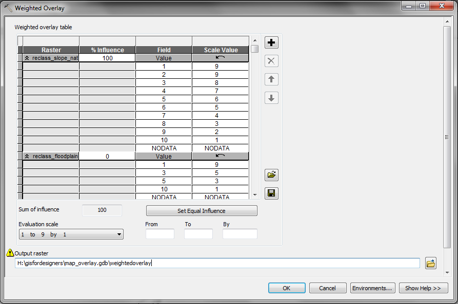

Map overlay analysis
Data
Download lake_raleigh.gdb, scratch.gdb conversion.gdb, reclassification.gdb, and map_overlay.gdb from ClassStore or http://fatra.cnr.ncsu.edu/gisfordesigners/
Setup
Turn on the Spatial Analyst Extension
In the Customize menu Select 'Extensions…' Check the 'Spatial Analyst'
Geoprocessing options
In the Geoprocessing -> Geoprocessing Options menu Check the 'Overwrite the output of geoprocessing operations' Uncheck 'Background Processing -> Enable'
Environment settings
In ArcToolbox Right click in the white space of the ArcToolbox pane and select 'Environments…' Set 'Workspace -> Current Workspace' to 'reclassification.gdb' Set 'Workspace -> Scratch Workspace' to 'map_overlay.gdb' Set 'Processing Extent -> Extent' to 'Same as layer lake_raleigh_dem' Set 'Processing Extent -> Snap Raster' to 'lake_raleigh_dem' Set 'Raster Analysis -> Cell Size' to 'same as lake_raleigh_dem' Check 'Raster Storage -> Pyramid -> Build pyramids' Set 'Raster Storage -> Pyramid -> Pyramid resampling technique' to 'NEAREST' Set 'Raster Storage -> Resampling Method' to 'NEAREST'
Reclassify the data for suitability
Floodplain
Reclassify the floodplain
on a scale from 1 to 10 where 1 is safe and 10 is risky
Review the attribute table for 'floodplain_2006' Refer to FEMA Flood Zones"
In ArcToolbox Select 'Spatial Analyst Tools -> Reclass -> Reclassify' Set 'Input raster' to 'floodplain_2006' Set 'Reclass field' to 'FLOODZONE' In 'Reclassification' Set 'AEFW' to '10' Set '1pct annual chance flood' to '3' Set 'AE' to '5' Set 'NoData' to '1' Set 'Output raster' to 'reclass_floodplain'
Slope
Reclassify the slope using the natural breaks method
In ArcToolbox Select 'Spatial Analyst Tools -> Reclass -> Reclassify' Set 'Input raster' to 'lake_raleigh_slope' Set 'Reclass field' to 'Value' Set 'Reclassification -> Classify -> Classification Method' to 'Natural Breaks (Jencks)' with 10 Classes Set 'Output raster' to 'reclass_naturalbreaks'
Symbolize 'reclass_slope_naturalbreaks'
In the Layer Manager Right click on the 'reclass_slope_naturalbreaks' layer and select 'Layer Properties' In 'Layer Properties -> Symbology -> Color Scheme' choose the 'Slope' color scheme
Overlay analysis
Weighted overlay
Use weighted overlay analysis to compute a cost map
In ArcToolbox Select 'Spatial Analyst Tools -> Overlay -> Weighted Overlay' Add raster rows 'reclass_slope_naturalbreaks' Add raster rows 'reclass_floodplain' Set '% Influence' Set 'Scale Value' as the reverse of 'Field Value' Set 'Output raster' to 'weightedoverlay'
For example:

Mask
Use map algebra to combine the buildings, chancellor's property, and lake raleigh rasters for use as a mask
In ArcToolbox Select 'Spatial Analyst Tools -> Map Algebra -> Raster Calculator' In the Raster Caclulator Set the expression to 'Con( ~IsNull("%buildings_2013%" )| ~IsNull("%chancellors%") | ~IsNull("%lake_raleigh%"),1)' Set 'Output raster' to 'map_overlay.gdb\mapalgebra_mask'
Use map algebra to mask the cost map
In ArcToolbox Select 'Spatial Analyst Tools -> Map Algebra -> Raster Calculator' In the Raster Caclulator Set the expression to 'Con(IsNull("%mapalgebra_mask%"),"%weightedoverlay%")' Set 'Output raster' to 'map_overlay.gdb\weightedoverlay_costmap'
Least cost path
Cost distance
Compute the cost distance
In ArcToolbox Select 'Spatial Analyst Tools -> Distance -> Cost Distance' Set 'Input raster or feature source data' to 'site_1' Set 'Input cost raster' to 'weightedoverlay_costmap' Set 'Output distance raster' to 'weightedoverlay_costdistance' Set 'Output backlink raster' to 'weightedoverlay_backlink'
Cost path
Compute the cost path
In ArcToolbox Select 'Spatial Analyst Tools -> Distance -> Cost Path' Set 'Input raster or feature source data' to 'site_2' Set 'Input cost distance raster' to 'weightedoverlay_costdistance' Set 'Input backlink raster' to 'weightedoverlay_backlink' Set 'Output raster' to 'weightedoverlay_costpath' Set 'Path type' to 'EACH_CELL'
Raster to polyline
Convert the raster cost path to a vector cost path
In ArcToolbox Select 'Conversion -> From Raster -> Raster to Polyline' Set 'Input raster' to 'site_2' Set 'Input cost distance raster' to 'weightedoverlay_costpath' Set 'Output polyline features' to 'weightedoverlay_costpath'
Under construction....